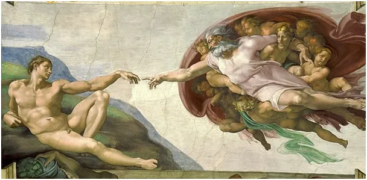

Energia czy materia? A co z Duchem?
Wiek XX. Ludzkość przeszła pod sztandarem teorii Einsteina z wzorem E=mc^2. Po lewej stronie równania jest energia "E", po prawej masa "m" i prędkość światła "c" podniesiona do kwadratu.
Czyli pytanie z tytułu jest źle postawione, bo masa i energia są postaciami tego samego, ale czego nie wiemy. Masę utożsamiamy z materią. Masa to coś, co ma bezwładność. Ponadto różne przedmioty, które mają masę przyciągają się siłą grawitacji, ale o tym nie będziemy tu myśleć. Wszystkie atomy we wszechświecie przyciągają się do siebie, w tym sensie wszystkie "wiedzą" o istnieniu wszystkich pozostałych. To jest coś, ale jest coś dziwniejszego. Bezwładność to inna zdumiewająca własność masy. W kosmosie "wisi" skała, meteoryt, gdy pchniemy ją z pewną siłą ta skała odpowie taką samą siłą na naszą dłoń, po czym jakby odpychając się od naszej dłoni poleci. Gdy straci kontakt z naszą dłonią jej prędkość będzie już stała i będzie tak lecieć bez końca. Bezwładność oznacza też, że aby ją zatrzymać musimy użyć siły, patrz łapanie piłki przez bramkarza. W całym tym procesie nie ma nic o grawitacji, sama bezwładność.
Gdy się chwilę nad tym zastanowić to jest to trudne do pojęcia, tym bardziej, że masę w przemianie jądrowej można zmienić w energię. Bomba atomowa jest to zjawisko, w którym bierzemy kilka kg plutonu i powodujemy, że część tej masy znika i zamienia się w ciepło i światło. Powiedzmy że mamy 10 kg metalu, coś tam robimy z nim, pół kilo znika, ale mamy grzyb atomowy i 9,5 kg odpadów po reakcji. Tak działają też elektrownie atomowe. Żeby było jeszcze ciekawiej fizycy nas przekonują, że kiedyś nie było nic i nagle wielki wybuch i mamy kosmos. W tym momencie nie sposób nie odnieść się do Stwórcy. Ludzki umysł nie może przyjąć, że coś było zawsze albo powstało z niczego, to jest irracjonalne. Dlatego podziwiam ludzi niewierzących, że wierzą, że wszytko powstało z niczego. Właśnie dotknęliśmy paradoksu wiary materialistów, ale już tak jest z tego typu poglądami, że są zawsze niespójne.
Jest to też dobry moment, aby odnieść się do wiary w różne "wibracje". Jak pisałem wyżej wszelkie fale i wibracje to emanacja tej samej materialnej natury w różnych postaciach: albo masy albo fali elektromagnetycznej. Duchowa tradycja nazywana idealizmem dotyczy tego, co przed i poza materią.

Wizja Newtona, że świat to wielki zegar i cała przyszłość jest znana od początku upadła w XX. wieku, gdy okazało się, że materia to jeden wielki hologram, którego przyszłości nie można przewidzieć a jedynym materialnym elementem sprawczym w kosmosie jest człowiek. Mimo to wizje deterministyczne są ciągle żywe, bo w praktyce zdobycze fizyki XX. wieku nie są ludzkości znane. Są trudne do przyswojenia, ale nie jest to niemożliwe. Niestety poziom edukacji powszechnej upada błyskawicznie w naszej cywilizacji. To bardzo ułatwia sterowanie masami, bo można forsować rozwiązania ekonomiczne niezgodne z interesem ludu, bo lud nie rozumie, w co się daje wpuścić. Tak to od wzoru Einsteina dotarliśmy do pogaństwa, czyli systemu wierzeń opartego o magiczne właściwości przedmiotów i gestów. W cywilizacji łacińskiej, w doktrynie religijnej, posługujemy się symbolami czegoś spoza tego świata, pogaństwo to wiara np. w moc przedmiotów jak w legendach o świętym Graalu. Nie mogę oprzeć się wrażeniu, że przez ostatnie 1000 lat, te pogańskie nurty jak bumerang najczęściej do nas docierają od Anglosasów.
Mamy od trzech dekad "na stole" ideę, że człowiek jest szkodnikiem w przyrodzie bo "pali lasy a zwierzęta nie palą". Ale to tylko człowiek dostał zdolność panowania nad ogniem a nic nie dzieje się bez powodu. W mitach pogańskiej Grecji ogień był zarezerwowany dla licznych bogów z Olimpu, Prometeusz za przekazanie go ludziom został surowo ukarany. Czy w waszej gminie też już jest zakaz palenia w kominku? Newton pod koniec życia był przekonany o nieuchronnie zbliżającym się końcu świata (ok. 1720).
Paweł Klimczewski